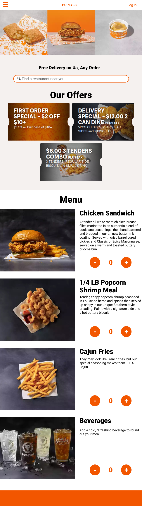
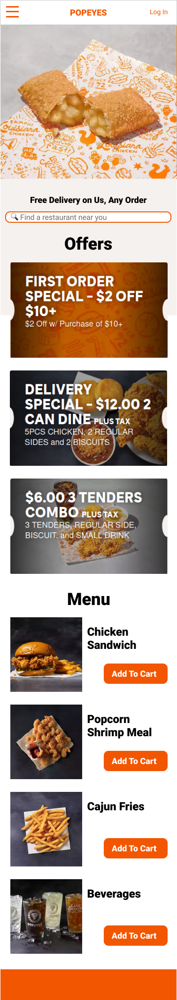
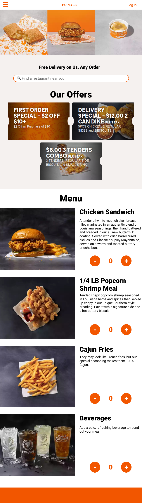
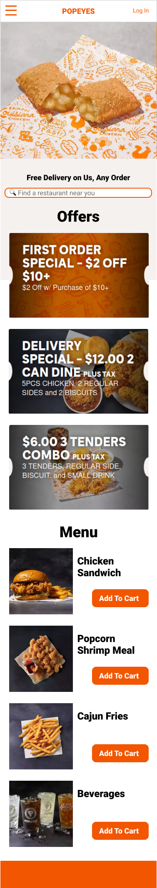

Figure 3. High-fidelity prototypes of the Popeyes webpage
The one for large screens is shown at the top. The three images at the bottom, from left to right, are the navigation bar for tablets and mobile phones, the main part of a tablet prototype, and the main part of a mobile prototype. A complete tablet (resp. mobile) prototype is the main part plus the navigation bar.
The side navigation bar (only applicable to tablets and mobiles) should slide in from left to right once the button at the top-left corner is clicked. A user might tap other areas to put back the navigation bar.
Another different thing in the header is the group of sign-up and log-in buttons. In non-large screens, only the log-in button is shown, and with a different style
The gallery of fans' favorite foods (i.e. apple pie, chicken sandwich, and mashed potato) is shown with a square on mobile screens. Users may swap horizontally the shown picture to see others.
To achieve responsiveness, the offers section should use a flexbox to contains the coupons.
Finally, the buttons for adding foods to the cart are simpler on mobile screens. For each menu item, there should be two sets of buttons but only one set is shown on specific screen size.
Please refer to the visual design style guide (next section) on how visual elements react to some other user actions.